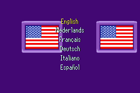

Urbz, The - Sims in the City (USA, Europe) (En,Fr,De,Es,It,Nl)
Flash 512K Save Format Spec gbakit Built-In
Cartridge Identity
- Game Code
BOCE(FamilyBOC)- Header Title
THE URBZ AGB- Maker / Revision
69/ rev0- ROM Size
- 32.0 MiB (33,554,432 B)
- Save Media
Flash 512K- SHA-256
60ee5a1720b5a61f62fb11e501b9e4f6596478469942be88b395ae0a76bf06dd- Engine / SDK Group
comm-006(66 families)
Screenshots


Battery Save Format Specification
Open Full Save Format SpecDownload Sample .sav (65,536 B)Download save-format.json
- Specification Coverage
- 25 mapped fields · 2 verified checksum(s) · Confidence: MEDIUM
- gbakit Built-In Support
- Built-in (BOCE)
- Emulator Verification
- Checksum enforced: Yes · Repaired save accepted: Yes · Visual delta on edit: Yes
gbakit save verify BOCE save.sav
gbakit save decode BOCE save.sav
gbakit save fix BOCE damaged.sav -o repaired.savObserved Battery Save Layout
- Fill Byte & Active Size
0xFFfill · 20,466–20,477 / 65,536 B active (entropy 0.03 bits/B)- Active Offset Ranges
0x0–0x8,0xA–0x11,0x14–0x4FFF(3 total)- ASCII Magic / Headers
URBZ0011- Observed Variable Regions
- 240 bytes across 41 spans:
0xB,0xF,0xCC–0xCF,0xD4–0xD5,0xD7,0x300–0x317,0x34A–0x34E,0x610–0x619, +12 more - Candidate Checksum/Counter Spans
0xB,0xF,0xCC–0xCF,0xD4–0xD5,0xD7,0x70C–0x70D,0x710–0x711,0x713–0x715, +8 more- Integrity Check
- Confirmed at
0xB
ROM Assets, Compression & Audio
- BIOS Compression
- LZ77 (
0x10): 824 streams · RLE (0x30): 0 streams - ROM Pointer Tables
- 85 tables (0 pointing to validated compressed streams)
- SDK Backup Tags
FLASH512_V131
Hardware MMIO Subsystems
ppu_display0x8000618,0x800e978,0x800eb38save_bus_sram_flash0x806b3c8,0x806b61c,0x806ba34
Regional Variants & Revisions (Family BOC)
- Urbz, The - Sims in the City (Japan) (
BOCJ, 32 MiB)